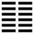

Thuần Khôn (坤 kūn)
Khôn: Nguyên, hanh, lợi, tẫn mã chi trinh. Quân tử hữu du vãng, tiền mê hậu đắc, chủ lợi. Tây nam đắc bằng, đông bắc táng bằng. An trinh, cát.
Dịch: Khôn có đức đầu tiên và lớn, hanh thông, thích đáng, đức chính và bền của con ngựa cái. Người quân tử có việc làm mà thủ xướng thì lầm, để người khác thủ xướng mà mình theo sau thì được. Chỉ cốt lợi ích cho vạn vật. Đi về phía tây nam thì được bạn, về phía đông bắc thì mất bạn. An lòng giữ đức bên vững, tốt.
Giảng: Quẻ Càn gồm 6 hào dương, quẻ Khôn gồm 6 hào âm. Càn “tượng” (1) trời thì không “tượng” đất. Càn cương kiện thì Khôn nhu thuận. Càn tạo ra vạn vật ở vô hình, thuộc phần khí; nhưng phải nhờ Khôn vạn vật mới hữu hình, mới sinh trưởng, cho nên công của Khôn cũng lớn như công của Càn; chỉ khác Khôn phải ở sau Càn, tùy theo Càn, bổ túc cho Càn; cho nên các đức nguyên, hanh, lợi, Khôn có đủ như Càn; chỉ riêng về đức trinh (chính và bền) thì Khôn hơi khác: tuy chính và bền nhưng phải thuận. Văn Vương dùng con ngựa cái để “tượng” Không: ngựa là giống mạnh mà ngựa cái có tính thuận theo ngựa đực.
Cũng vì Khôn có đức thuận, cho nên khởi xướng phải là Càn, Khôn chỉ tiếp tục công việc của Càn. Người quân tử nếu ở vào địa vị khôn, phải tùy thuộc người trên thì làm việc cũng đừng nên khởi xướng để khỏi lầm lẫn, chờ người ta khởi xướng rồi mới theo thì được việc, như vậy là có đức dày như đất, chở được muôn vật, lớn cũng không kém đức của trời (Càn): “Quân tử dĩ tự cường bất tức” là bài học rút ra từ quẻ Càn.
Chu công còn khuyên đi về phía Tây Nam vì trên Hậu thiên bát quái Khôn ở phía Tây nam (có học giả hiểu là phía Tây và phía Nam) thì được bạn (hoặc được tiền bạc, vì chữ “bằng” cò thể hiểu là bằng hữu, cũng có thể hiểu là bằng bối: bối là vỏ sò ngao xưa dùng làm tiền, 1 bằng là 2 hoặc 10 bối) nếu đi về phía Đông bắc thuộc dương thì mất bạn (hoặc tiền bạc).
Được quẻ này, nến theo những lời khuyên đó mà an lòng, giữ đức bền vững thì tốt.
Câu “Quân tử hữu du vãng, tiên mê hậu đắc” có người hiểu là: “Người quân tử có đi đâu thì trước lầm sau đúng”, mà không giảng tại sao lại như vậy. Hiểu như chúng tôi ở trên thì có lý hơn, làm rõ cái đạo “thuận tòng thì tốt” của Khôn. Chữ “du” ở trong kinh Dịch thường dùng như chữ “sở”
Tác giả Văn Ngôn không giảng gì thêm chỉ tóm tắt lại: Đạo Khôn là thuận theo trời mà tiến hành không ngừng.
Ý nghĩa các hào:
Sơ lục: Lý sương, kiên băng chí.
Giảng: Đây là hào âm đầu tiên trong quẻ. Âm thì lạnh, nên Chu Công ví với sương lạnh mới kết lại thì thành sương, rồi lần lần, lạnh hơn, nước sẽ đông lại thành băng. Hao này có hàm cái ý phải thận trọng từ bước đầu. Tiểu tượng truyện không giảng thêm, còn Văn ngôn truyện thì khuyên ta:
“Nhà nào tích lũy điều lành thì tất có thừa phúc (để đến đời sau); nhà nào tích lũy điều chẳng lành thì tất có thừa tai vạ (để đến đời sau). Như việc bề tôi giết vua, con giết cha, nguyên do không ở trong một buổi sớm chiều; tất dần dà có từ lâu rồi, mà người ta không biết lo toan từ sớm vậy” (tích thiện chí gia tất hữu dư khách, tích bất thiện chi gia tất hữu dư ương: Thần thí kỳ quân, tử thí kỳ phụ, phi nhất triều nhất tịch chi cố, kỳ sở do lai giả tiệm hĩ. Do biện chi bất tảo biện dã).”
Chúng ta để ý: hào 1 quẻ Càn, Dịch chỉ khuyên cứ ở ẩn, tu đức luyện tài chờ thời; còn hào 1 quẻ Khôn này. Dịch răn phải đề phòng từ đầu, nếu không sẽ gặp họa; như vậy Dịch tin ở Dương hơn đạo Âm, trọng Dương hơn Âm.
Lục nhị: Trực phương đại, bất tập vô bất lợi.
Dịch: Hào 2, âm (Đức của mình) thẳng, vuông, lớn thì chẳng phải học tập mà cũng không có gì là không lợi.
Giảng: Hào này rất tốt: thể là âm, vị cũng là âm ( hào chẳn), thế là đắc chính, cho nên bảo là có đức thẳng (trực) nó lại đắc trung, (ở giữa nội quái) cho nên bảo là vuông vức (phương) (1) nó lại ở trong quẻ Khôn, có qui mô lớn, nên chẳng cần học tập khó khăn mà hành động nào cũng hợp đạo lý.
Văn ngôn giảng thêm: người quân tử muốn như hào 2 này mà ngay thẳng ở trong lòng thì phải có đức kinh; vuông ở ngòai (khi tiếp vật) thì phải có đức nghĩa. Có hai đức kính, nghĩa đó thì sẽ không cô lập (?). Nguyên văn: “bất cô”, Chu Hi giảng là to lớn, tức có ý cho rằng: Kính thì “trực”, nghĩa thì “phương”. Có đủ kính và phương thì là “đại”. Chúng tôi hiểu theo câu: Đức bất cô, tất hữu lân” (người có đức thì không lẻ loi, tất có bạn cũng trọng đạo đức như mình (bạn đây là hào 5, ứng với 2) không biết có đúng không.
Lục tam: hàm chương khả trinh, hoặc tòng vương sự, vô thành hữu chung.
Dịch: Hào 3, âm: Ngậm chứa (đừng để lộ ra) đức tốt mà giữ vững được, có khi theo người trên mà làm việc nước, đừng chiếm lấy sự thành công thì sau cùng sẽ có kết quả.
Giảng: Hào 3 là âm mà ở vào địa vị dương (lẻ), như vậy là không chính, nhưng nó vốn có đức nhu thuận của quẻ Khôn, thêm được tính cương kiện của vị dương, thì lại là tốt (đây là lẽ biến hóa của Dịch).
Nó đứng trên cùng nội quái, tức có thể có chức phận, cho nên bảo là có lúc theo bề trên làm việc nước. Nhưng nó nên nhũn, nhu thuận (đức của Khôn) chỉ làm trọn nghĩa vụ mà đừng chiếm lấy sự thành công thì sau cùng sẽ có kết quả.
Văn ngôn bàn thêm: Ngậm chứa đức tốt, theo người trên làm việc mà không dám chiếm lấy sự thành công, đó là đạo của Đất, của vợ, của bề tôi (địa đạo, thê đạo, thần đạo). Đó là cách cư xử của người dưới đối với người trên.
Lục tứ: quát nang, vô cữu, vô dự.
Dịch: Hào 4 âm: như cái túi thắt miệng lại, (kín đáo giữ gìn) thì khỏi tội lỗi mà cũng không danh dự.
Giảng: hào 4 là âm ở địa vị âm trong một quẻ tòan âm, mà không đắc trung như hào 2, ví như người quá nhu thuận, vô tài, không có chút cương cường nào. Đã vậy, mà ở sát hào 5, tức là có địa vị một đại thần, tài thấp mà địa vị cao, nên phải thận trọng thì mới khỏi tội lỗi, an thân, mặc dầu không có danh dự gì.
Hào 4 quẻ Càn cũng ở địa vị như hào này, nhưng là dương, có tài năng, nên còn có thể bay nhảy, tiến được (hoặc dược), khác nhau ở chỗ đó.
Văn ngôn cho hào này có cái tượng “âm cự tuyệt dương” (vì không có chút dương nào cả từ bản thể tới vị), như vậy là âm dương cách tuyệt nhau, trời đất không giao nhau (thiên địa bế), lúc đó hiền nhân nên ở ẩn (hiền nhân ẩn), rất thận trọng thì không bị tai họa.
Lục ngũ: hoàng thường, nguyên cát.
Dịch: hào 5, âm: như cái xiêm màu vàng, lớn, tốt (rất tốt).
Giảng Hào 5 là hào chí tôn trong quẻ, đắc trung. Tuy nó không đắc chính vì là âm mà ở vị dương; nhưng ở trong quẻ Khôn,như vậy lại tốt vì có chút cương, không thuần âm, thuần nhu, như hào 4, tức là có tài, nhưng vẫn là Khiêm nhu (vì là âm). Âm còn hàm ý văn vẻ nữa, trái với dương cương kiện là võ. Cho nên Chu Công cho là hào này rất tốt, và “tượng” bằng cái xiêm màu vàng. Vàng là màu của đất, của trung ương (hàm ý không thái quá, không bất cập) của vàng, đồng, nên người Trung Hoa thời xưa rất quí, chỉ vua chúa mới được dùng màu vàng trong y phục. xiêm là một bộ phận y phục ở phía dưới, đẹp đẽ, hàm cái nghĩa khiêm hạ, không tự tôn.
Văn ngôn bàn thêm: người quân tử có đức trung (màu vàng) ở trong mà thông suốt đạo lý, ở ngôi cao mà vẫn khiêm, tự coi mình ở thể dưới (như cái xiêm); như vậy là chất tốt đẹp ở bên trong mà phát ra bề ngòai, làm nên sự nghiệp lớn, tốt đẹp như vậy là cùng cực.
Như vậy Dịch tuy coi âm (Khôn) không quí bằng dương (Càn), nhưng có lúc coi trọng đức khiêm nhu, mà Dịch cho là đức của người văn minh. Tinh thần đó là tinh thần hiếu hòa, trọng văn hơn võ. Hào 5 quẻ Càn, Chu Công cho là đại quí (long phi tại thiên) nhưng chỉ bảo: “Lợi kiến đại nhân”; còn hào 5 quẻ không thì khen là”nguyên cát” hào tốt nhất trong Kinh Dịch, là có nghĩa vậy.
Lục thượng: Long chiến vu dã, kỳ huyết huyền hoàng.
Dịch: Hào trên cùng âm : Như rồng đánh nhau ở đồng nội, đổ máu đen máu vàng.
Giảng: hào này âm lên tới điểm cực thịnh. Âm dương tuy bổ túc nhau, nhưng bản thể vẫn là ngược nhau, đối địch nhau. Khi âm cực thịnh, dương cũng vậy ( hào 6 quẻ Càn) thì hai bên tất tranh nhau, và cả hai đều bị hại. Đạo đến đó là cùng rồi. cũng vẫn cái nghĩa thịnh cực thì suy như hào 6 quẻ Càn.
Văn ngôn: không giảng gì khác, chỉ cho biết rằng “huyền hoàng”: là sắc của trời đất, âm dương.
Cao Hanh ngờ rằng hai chữ đó [玄 黄] thời xưa dùng như hai chữ [ ] (vì đọc như nhau) và có nghĩa là chảy ròng ròng. Không rõ thuyết nào đúng, nhưng đại ý vẫn là tai hại cả cho hai bên.